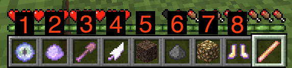
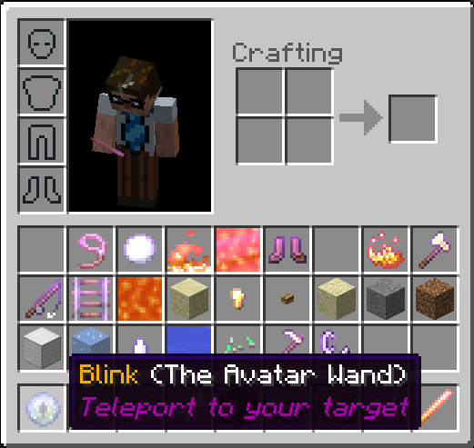
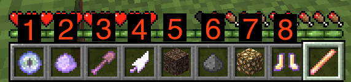
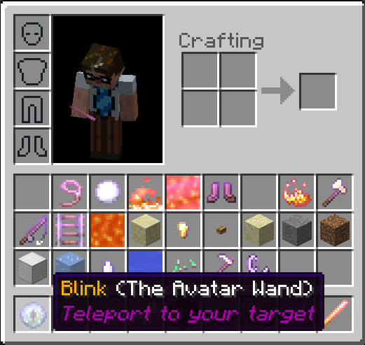

Obtaining a Wand
In order to cast spells, you must obtain a wand. Each wand is unique and knows one or more spells. Wands can also be imbued with
special properties and materials.
You may obtain a wand in one of the following ways:
You may obtain a wand in one of the following ways:
- You can purchase wands in a shop, if your server has shops set up
- You can craft a wand (See: the Crafting tab)
There are also 7 wand templates, which may be purchasable or given my admins.
Wand Spells
Wands contain one or more spells in their inventory. You can use an enchanting table to learn new spells.
There are currently 56 spells available.
Using a Wand
A wand is considered "active" when you are holding it. Any special effects a wand gives are only applied while the wand is active.
Swing a wand (left-click) to cast its active spell. Some wands may have more than one spell. If a wand has multiple spells, you use the interact (right-click) action to cycle spells, and the drop (Q) action to open/close the spell inventory
For detailed instructions, see this video:
Wands may function in one of three modes:
Chest Mode
In the default mode, right-clicking with your wand will pop up a chest inventory. Click on a spell icon to activate it.
If your wand has a lot of spells, click outside of the inventory window to move to the next page. Right-click outside of the inventory to move back a page.
Inventory Mode
Right-click with your wand to toggle the wand inventory. When the wand's inventory is active, your survival items are stored and your player's inventory will change to show the spells and materials bound to your active wand:

With the wand inventory active, each spell is represented by an icon. You can quickly change spells using the hotbar buttons (1-9).
You can also open your inventory ('E' by default) to see all of the spells and materials your wand has, with detailed descriptions:

While in this view, you can re-arrange your spells and materials, deciding which ones to put in the hotbar.
Right-click again to deactivate the wand inventory and restore your items. Any items you collected while the wand inventory was active will be in your survival inventory.
For wands with more than 35 spells, clicking outside of the inventory will cycle to the next "page" of spells. Right-clicking outside of the inventory will go to the previous page. Renaming a wand on an anvil will organize its inventory, should it get too cluttered.
A spell or material can be quick-selected from an open wand inventory using right-click.
Cycle Mode
This mode only works well with low-powered wands, ones that only have a few spells. In this mode you right-click to cycle through available spells- there is no menu, and no icons.
Swing a wand (left-click) to cast its active spell. Some wands may have more than one spell. If a wand has multiple spells, you use the interact (right-click) action to cycle spells, and the drop (Q) action to open/close the spell inventory
For detailed instructions, see this video:
Wands may function in one of three modes:
Chest Mode
In the default mode, right-clicking with your wand will pop up a chest inventory. Click on a spell icon to activate it.
If your wand has a lot of spells, click outside of the inventory window to move to the next page. Right-click outside of the inventory to move back a page.
Inventory Mode
Right-click with your wand to toggle the wand inventory. When the wand's inventory is active, your survival items are stored and your player's inventory will change to show the spells and materials bound to your active wand:

With the wand inventory active, each spell is represented by an icon. You can quickly change spells using the hotbar buttons (1-9).
You can also open your inventory ('E' by default) to see all of the spells and materials your wand has, with detailed descriptions:

While in this view, you can re-arrange your spells and materials, deciding which ones to put in the hotbar.
Right-click again to deactivate the wand inventory and restore your items. Any items you collected while the wand inventory was active will be in your survival inventory.
For wands with more than 35 spells, clicking outside of the inventory will cycle to the next "page" of spells. Right-clicking outside of the inventory will go to the previous page. Renaming a wand on an anvil will organize its inventory, should it get too cluttered.
A spell or material can be quick-selected from an open wand inventory using right-click.
Cycle Mode
This mode only works well with low-powered wands, ones that only have a few spells. In this mode you right-click to cycle through available spells- there is no menu, and no icons.
Costs
Casting costs vary by spell, wand, and server configuration.
The most common setup is the "mana" system. In this mode, each wand has a mana pool that regenerates over time. While a wand is active, your mana is represented by the XP bar. (Your gathered XP will be saved and restored when the wand deactivates).
Other configurations could range from consuming actual XP, reagent items, or just being free.
Some wands may also have a limited number of uses, after which time they will self-destruct.
The most common setup is the "mana" system. In this mode, each wand has a mana pool that regenerates over time. While a wand is active, your mana is represented by the XP bar. (Your gathered XP will be saved and restored when the wand deactivates).
Other configurations could range from consuming actual XP, reagent items, or just being free.
Some wands may also have a limited number of uses, after which time they will self-destruct.
Select a spell for details.
Select a recipe for details.
Select a progression path for details.
Select a wand for details.
Select an item for details.
Select a mob for details.
Select a book to read.
There are 232 spell icons available in the Magic RP, each with a representative vanilla item chosen to represent a specific spell:
 oak_door{18001}(spells/admission)
oak_door{18001}(spells/admission) iron_ingot{18001}(spells/box)
iron_ingot{18001}(spells/box) repeater{18001}(spells/clone)
repeater{18001}(spells/clone) netherite_scrap{18001}(spells/copy)
netherite_scrap{18001}(spells/copy)- paper{18001}(spells/copy)
 nether_wart{18001}(spells/critical)
nether_wart{18001}(spells/critical) warped_sign{18003}(spells/default)
warped_sign{18003}(spells/default) brick{18001}(spells/erase)
brick{18001}(spells/erase) bone_meal{18007}(spells/growth)
bone_meal{18007}(spells/growth)- oak_sapling{18001}(spells/growth)
 saddle{18001}(spells/horse)
saddle{18001}(spells/horse) tnt{18003}(spells/no)
tnt{18003}(spells/no) comparator{18001}(spells/replicate)
comparator{18001}(spells/replicate) cyan_banner{18001}(spells/schematic)
cyan_banner{18001}(spells/schematic) warped_sign{18004}(spells/superbackup)
warped_sign{18004}(spells/superbackup) dried_kelp{18001}(spells/sweep)
dried_kelp{18001}(spells/sweep) salmon{18001}(spells/tame)
salmon{18001}(spells/tame) spider_eye{18001}(spells/vengeance)
spider_eye{18001}(spells/vengeance)
Click below to load up any of the builtin examples.
Legacy configs use player skulls for icons, here are 266 that have been made or chosen specifically for Magic.